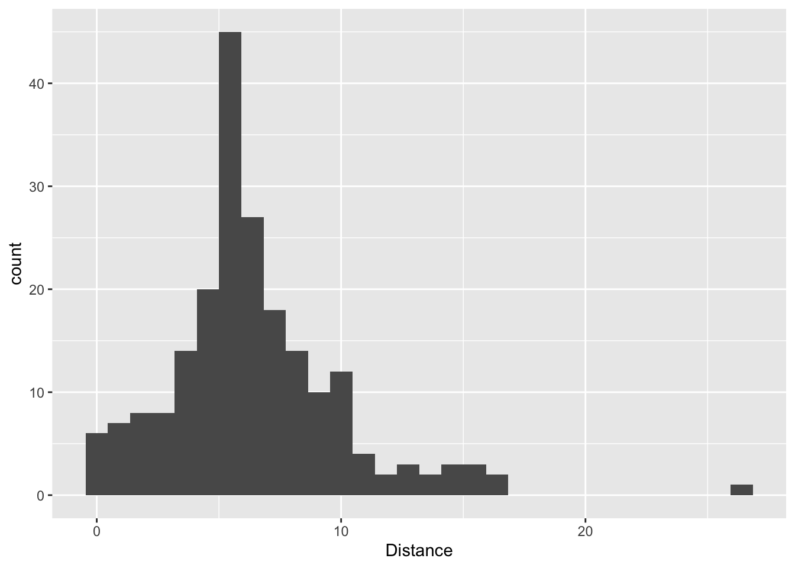
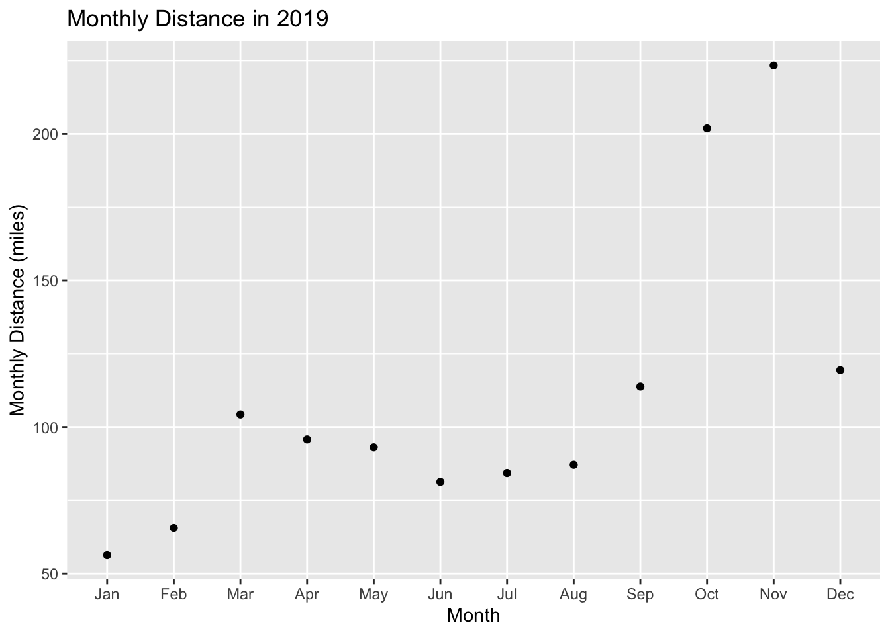
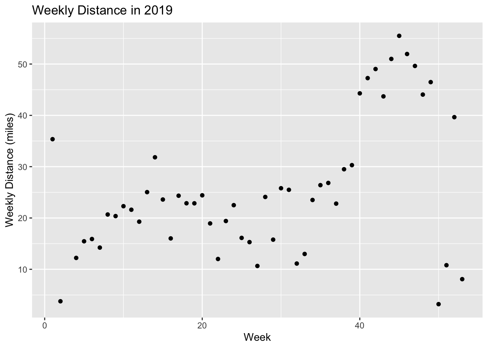
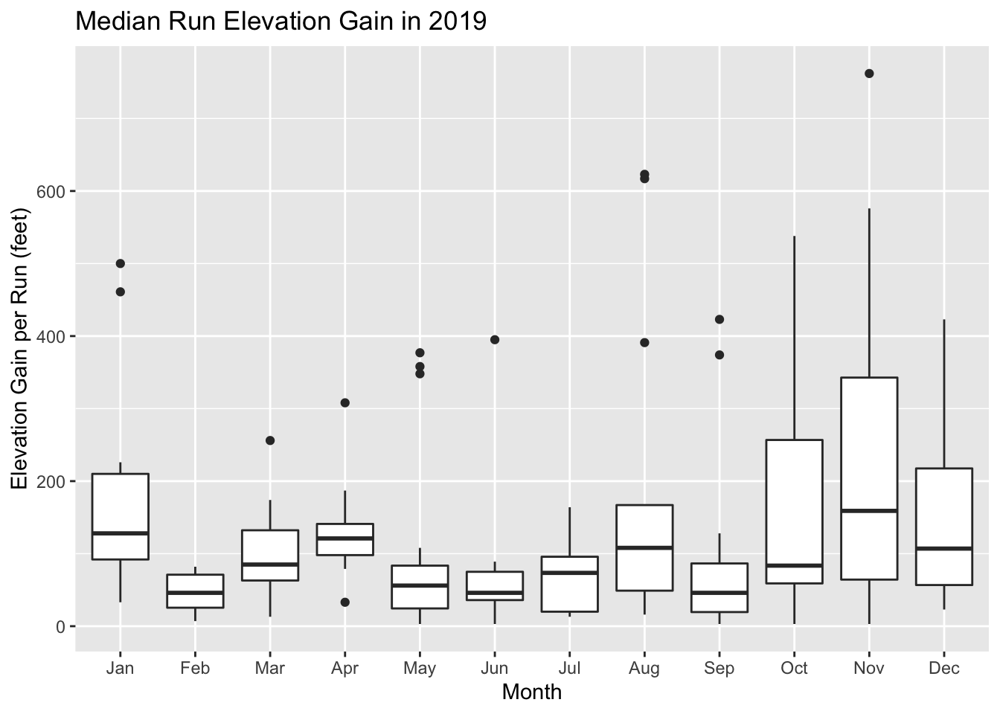
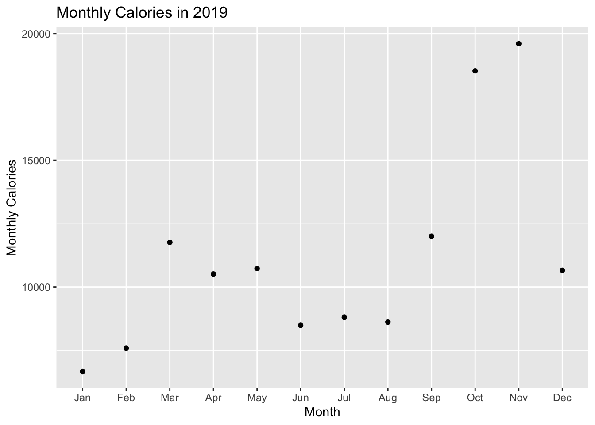
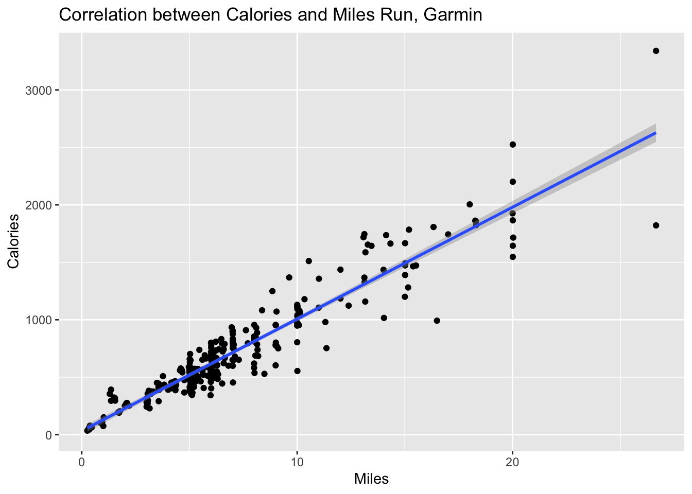
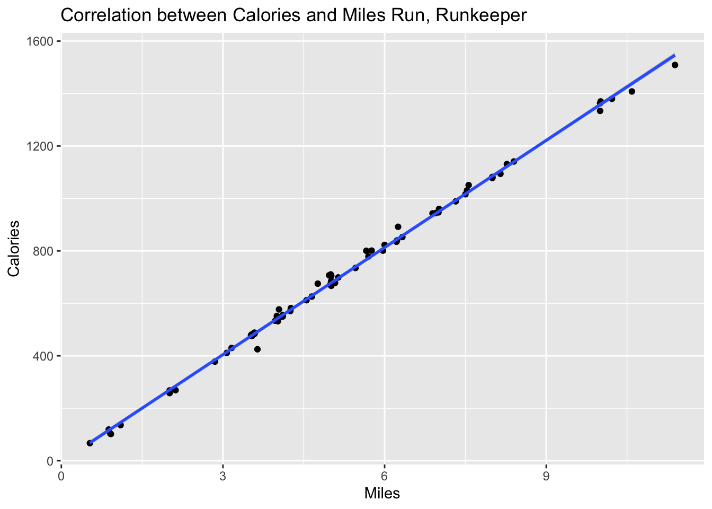

After a great 2019 of running, I wanted to look back to see how far I had run. I regularly use a Garmin GPS watch to track my runs. The Garmin app and website let me look back at 12 months but after January 1, the 12 months was updated to February 2019 to January 2020 so I couldn’t see my 2019 totals anymore. I also sync to Strava but the Strava 2019 Year in Review mileage total (1216 miles) was off of the Garmin calculation that I saw at the end of December (~1300 miles). Fortunately I was able to download my data from the Garmin website and analyze it in R.
Data Cleaning
The data was read in as a lot of factors so I had to convert them to numeric data. I’m not sure why but I had to convert to character before doing the numeric conversion. I think this has to do something with the factor levels.
suppressPackageStartupMessages(library(dplyr))
library(ggplot2)
suppressPackageStartupMessages(library(lubridate))
runs <- tbl_df(read.csv("../datasets/garmin_data_20180611_20200103.csv"))glimpse(runs)## Observations: 439
## Variables: 32
## $ Activity.Type <fct> running, running, running, running, run…
## $ Date <fct> 2020-01-03 06:18:21, 2020-01-02 06:10:5…
## $ Favorite <fct> false, false, false, false, false, fals…
## $ Title <fct> Honolulu Running, Honolulu Running, Hon…
## $ Distance <fct> 5.05, 5.02, 5.91, 1.77, 6.31, 6.64, 5.0…
## $ Calories <fct> "437", "542", "508", "204", "485", "668…
## $ Time <fct> 00:49:49, 00:50:20, 00:54:33, 00:19:52,…
## $ Avg.HR <fct> 136, 147, 142, 143, 136, 148, 129, 146,…
## $ Max.HR <fct> 159, 164, 164, 168, 162, 179, 170, 166,…
## $ Aerobic.TE <fct> 2.1, 2.9, 2.5, 2.1, 2.1, 3.7, 2.0, 2.7,…
## $ Avg.Run.Cadence <fct> 169, 167, 171, 160, 170, 169, 167, 159,…
## $ Max.Run.Cadence <fct> 177, 175, 183, 173, 187, 184, 175, 171,…
## $ Avg.Pace <fct> 9:52, 10:01, 9:14, 11:13, 9:13, 9:36, 9…
## $ Best.Pace <fct> 7:58, 8:33, 6:55, 8:57, 7:11, 7:45, 8:0…
## $ Elev.Gain <fct> 305, 62, 308, 148, 79, 351, 59, 33, 26,…
## $ Elev.Loss <fct> 315, 92, 322, 131, 89, 367, 79, 43, 43,…
## $ Avg.Stride.Length <dbl> 0.96, 0.96, 1.02, 0.90, 1.03, 0.99, 0.9…
## $ Avg.Vertical.Ratio <dbl> 0, 0, 0, 0, 0, 0, 0, 0, 0, 0, 0, 0, 0, …
## $ Avg.Vertical.Oscillation <dbl> 0, 0, 0, 0, 0, 0, 0, 0, 0, 0, 0, 0, 0, …
## $ Training.Stress.Score. <dbl> 0, 0, 0, 0, 0, 0, 0, 0, 0, 0, 0, 0, 0, …
## $ Grit <dbl> 0, 0, 0, 0, 0, 0, 0, 0, 0, 0, 0, 0, 0, …
## $ Flow <dbl> 0, 0, 0, 0, 0, 0, 0, 0, 0, 0, 0, 0, 0, …
## $ Total.Strokes <fct> --, --, --, --, --, --, --, --, --, --,…
## $ Avg..Swolf <fct> --, --, --, --, --, --, --, --, --, --,…
## $ Avg.Stroke.Rate <fct> --, --, --, --, --, --, --, --, --, --,…
## $ Bottom.Time <fct> 0:00, 0:00, 0:00, 0:00, 0:00, 0:00, 0:0…
## $ Min.Temp <dbl> 75.2, 73.4, 69.8, 77.0, 75.2, 77.0, 77.…
## $ Surface.Interval <fct> 0:00, 0:00, 0:00, 0:00, 0:00, 0:00, 0:0…
## $ Decompression <fct> No, No, No, No, No, No, No, No, No, No,…
## $ Best.Lap.Time <fct> 00:24.89, 00:13.82, 07:50.10, 07:49.11,…
## $ Number.of.Runs <int> 6, 6, 6, 2, 7, 7, 6, 3, 5, 7, 6, 6, 5, …
## $ Max.Temp <dbl> 0, 0, 0, 0, 0, 0, 0, 0, 0, 0, 0, 0, 0, …runs$Date <- ymd_hms(runs$Date)
runs$Distance <- as.character(runs$Distance)
runs$Distance <- as.numeric(runs$Distance)## Warning: NAs introduced by coercionruns$Calories <- as.character(runs$Calories) # the commas in this variable mess up the later calculations
runs$Calories <- gsub(",", "", runs$Calories, fixed = TRUE)
runs$Calories <- as.numeric(runs$Calories)
runs$Avg.HR <- as.character(runs$Avg.HR)
runs$Avg.HR <- as.numeric(runs$Avg.HR)## Warning: NAs introduced by coercionruns$Max.HR <- as.character(runs$Max.HR)
runs$Max.HR <- as.numeric(runs$Max.HR)## Warning: NAs introduced by coercionruns$Elev.Gain <- as.character(runs$Elev.Gain)
runs$Elev.Gain <- as.numeric(runs$Elev.Gain)## Warning: NAs introduced by coercionglimpse(runs)## Observations: 439
## Variables: 32
## $ Activity.Type <fct> running, running, running, running, run…
## $ Date <dttm> 2020-01-03 06:18:21, 2020-01-02 06:10:…
## $ Favorite <fct> false, false, false, false, false, fals…
## $ Title <fct> Honolulu Running, Honolulu Running, Hon…
## $ Distance <dbl> 5.05, 5.02, 5.91, 1.77, 6.31, 6.64, 5.0…
## $ Calories <dbl> 437, 542, 508, 204, 485, 668, 377, 273,…
## $ Time <fct> 00:49:49, 00:50:20, 00:54:33, 00:19:52,…
## $ Avg.HR <dbl> 136, 147, 142, 143, 136, 148, 129, 146,…
## $ Max.HR <dbl> 159, 164, 164, 168, 162, 179, 170, 166,…
## $ Aerobic.TE <fct> 2.1, 2.9, 2.5, 2.1, 2.1, 3.7, 2.0, 2.7,…
## $ Avg.Run.Cadence <fct> 169, 167, 171, 160, 170, 169, 167, 159,…
## $ Max.Run.Cadence <fct> 177, 175, 183, 173, 187, 184, 175, 171,…
## $ Avg.Pace <fct> 9:52, 10:01, 9:14, 11:13, 9:13, 9:36, 9…
## $ Best.Pace <fct> 7:58, 8:33, 6:55, 8:57, 7:11, 7:45, 8:0…
## $ Elev.Gain <dbl> 305, 62, 308, 148, 79, 351, 59, 33, 26,…
## $ Elev.Loss <fct> 315, 92, 322, 131, 89, 367, 79, 43, 43,…
## $ Avg.Stride.Length <dbl> 0.96, 0.96, 1.02, 0.90, 1.03, 0.99, 0.9…
## $ Avg.Vertical.Ratio <dbl> 0, 0, 0, 0, 0, 0, 0, 0, 0, 0, 0, 0, 0, …
## $ Avg.Vertical.Oscillation <dbl> 0, 0, 0, 0, 0, 0, 0, 0, 0, 0, 0, 0, 0, …
## $ Training.Stress.Score. <dbl> 0, 0, 0, 0, 0, 0, 0, 0, 0, 0, 0, 0, 0, …
## $ Grit <dbl> 0, 0, 0, 0, 0, 0, 0, 0, 0, 0, 0, 0, 0, …
## $ Flow <dbl> 0, 0, 0, 0, 0, 0, 0, 0, 0, 0, 0, 0, 0, …
## $ Total.Strokes <fct> --, --, --, --, --, --, --, --, --, --,…
## $ Avg..Swolf <fct> --, --, --, --, --, --, --, --, --, --,…
## $ Avg.Stroke.Rate <fct> --, --, --, --, --, --, --, --, --, --,…
## $ Bottom.Time <fct> 0:00, 0:00, 0:00, 0:00, 0:00, 0:00, 0:0…
## $ Min.Temp <dbl> 75.2, 73.4, 69.8, 77.0, 75.2, 77.0, 77.…
## $ Surface.Interval <fct> 0:00, 0:00, 0:00, 0:00, 0:00, 0:00, 0:0…
## $ Decompression <fct> No, No, No, No, No, No, No, No, No, No,…
## $ Best.Lap.Time <fct> 00:24.89, 00:13.82, 07:50.10, 07:49.11,…
## $ Number.of.Runs <int> 6, 6, 6, 2, 7, 7, 6, 3, 5, 7, 6, 6, 5, …
## $ Max.Temp <dbl> 0, 0, 0, 0, 0, 0, 0, 0, 0, 0, 0, 0, 0, …There were 439 activities in the dataset, spanning a range from June 2018 to January 2020.
min(runs$Date)## [1] "2018-06-11 05:41:15 UTC"max(runs$Date)## [1] "2020-01-03 06:18:21 UTC"I reviewed the types of activities and there were quite a few other activities like indoor rowing and cycling. I was just interested in the running and treadmill running activities.
runs %>% group_by(Activity.Type) %>%
summarize(n())## # A tibble: 8 x 2
## Activity.Type `n()`
## <fct> <int>
## 1 cycling 6
## 2 elliptical 2
## 3 hiking 12
## 4 indoor_cycling 96
## 5 indoor_rowing 22
## 6 open_water_swimming 1
## 7 running 277
## 8 treadmill_running 23start_date <- ymd_hms("20190101 00:00:01")
end_date <- ymd_hms("20191231 23:59:59")
runs_2019 <- runs %>% filter(Activity.Type == "treadmill_running" | Activity.Type == "running") %>%
filter(Date > start_date) %>%
filter(Date < end_date)Running Distance in 2019
2019 Total
After filtering the data, I found that in 2019 I ran 1326.35 miles. There were 1224.8 miles run outside and 101.55 on the treadmill. I think this is probably how Strava got a smaller number (1216) than Garmin. It’s not exactly what Strava said, but I think there are differences in how the Strava algorithm smooths out the GPS tracks compared to the Garmin algorithm that could account for the 8 mile difference (0.6% of 1224 miles).
sum(runs_2019$Distance)## [1] 1326.35runs_2019 %>% group_by(Activity.Type) %>%
summarize(sum(Distance))## # A tibble: 2 x 2
## Activity.Type `sum(Distance)`
## <fct> <dbl>
## 1 running 1225.
## 2 treadmill_running 102.Here’s the distribution of running in 2019.
runs_2019 %>%
ggplot(aes(x = Distance)) + geom_histogram()## `stat_bin()` using `bins = 30`. Pick better value with `binwidth`.
Distance by Month and Week
I looked at the distances by month and week. In October, I switched from the Run Less, Run Faster method to the Hanson’s marathon method. From the graphs it’s pretty obvious when I switched my training regimen.
runs_2019 %>% mutate(Month = factor(month(Date), labels = month.abb)) %>%
group_by(Month) %>%
summarize(monthly_Distance = sum(Distance)) %>%
ggplot(aes(x = Month, y = monthly_Distance)) +
geom_point() +
ylab("Monthly Distance (miles)") +
ggtitle("Monthly Distance in 2019")
runs_2019 %>% mutate(Week_obs = week(Date)) %>%
group_by(Week_obs) %>%
summarize(weekly_Distance = sum(Distance)) %>%
ggplot(aes(x = Week_obs, y = weekly_Distance)) +
geom_point() +
ylab("Weekly Distance (miles)") +
xlab("Week") +
ggtitle("Weekly Distance in 2019")
Hill Running
I started running some hilly routes in 2019 to see if it would help me with the hills on the marathon course. Elevation change in feet is calculated from the barometric pressure sensor in the watch. I calibrated it once but it doesn’t seem to be that accurate compared to the GPS data, and when I correct it on the website, it is often off by quite a bit (an idea for another analysis?). In any case, I gained 27,789 feet in altitude this year. Strava says this is like a Mt. Everest, but it’s more accurately closer to the 5th highest in the list of highest mountains, Makalu.
runs_2019 %>% summarize(sum(Elev.Gain, na.rm = T))## # A tibble: 1 x 1
## `sum(Elev.Gain, na.rm = T)`
## <dbl>
## 1 27789The average elevation gain by month
runs_2019 %>% filter(!is.na(Elev.Gain)) %>%
mutate(Month = factor(month(Date), labels = month.abb)) %>%
ggplot(aes(x = Month, y = Elev.Gain)) +
geom_boxplot() +
ylab("Elevation Gain per Run (feet)") +
ggtitle("Median Run Elevation Gain in 2019")
I had been running hills in January then strained my calf and had to take a couple of weeks off. I tried to avoid hills for a while after that but when I started training for the marathon in August, I started adding some light hills.
Calories in 2019
I looked at the calories in my previous post using my Runkeeper app data. Here are my monthly calories. These are obviously highly correlated with the mileage.
runs_2019 %>% mutate(Month = factor(month(Date), labels = month.abb)) %>%
group_by(Month) %>%
summarize(monthly_cals = sum(Calories, na.rm = T)) %>%
ggplot(aes(x = Month, y = monthly_cals)) +
geom_point() +
ylab("Monthly Calories") +
ggtitle("Monthly Calories in 2019")
Calories and Miles Run
Comparing the calories and the miles run, I got the following graph. I used all the data from 2018-2020 for this analysis.
runs %>% filter(Activity.Type == "treadmill_running" | Activity.Type == "running") %>%
ggplot(aes(x = Distance, y = Calories)) + geom_point() + geom_smooth(method = "lm") +
labs(title = "Correlation between Calories and Miles Run, Garmin",
x = "Miles",
y = "Calories")
As the distance increased there was a significant increase in the spread for calories. The slope of the line from the Garmin data was 97 calories per mile.
x <- runs %>% filter(Activity.Type == "treadmill_running" | Activity.Type == "running")
model1 <- lm(x$Calories ~ x$Distance)
summary(model1)##
## Call:
## lm(formula = x$Calories ~ x$Distance)
##
## Residuals:
## Min 1Q Median 3Q Max
## -806.93 -75.35 -0.20 68.42 712.07
##
## Coefficients:
## Estimate Std. Error t value Pr(>|t|)
## (Intercept) 32.704 17.054 1.918 0.0561 .
## x$Distance 97.345 2.041 47.690 <2e-16 ***
## ---
## Signif. codes: 0 '***' 0.001 '**' 0.01 '*' 0.05 '.' 0.1 ' ' 1
##
## Residual standard error: 154.9 on 298 degrees of freedom
## Multiple R-squared: 0.8842, Adjusted R-squared: 0.8838
## F-statistic: 2274 on 1 and 298 DF, p-value: < 2.2e-16Compare this to the graph that the Runkeeper data produced in 2018. Even though this graph only has runs up to about 9 miles, you can see there is virtually no spread from this line versus the substantial spread in the Garmin data under 10 miles.
dat <- tbl_df(read.csv("../datasets/cardioActivities.csv"))
dat %>% filter(Type == "Running") %>%
ggplot(aes(x = Distance..mi., y = Calories.Burned)) + geom_point() + geom_smooth(method = "lm") +
labs(title = "Correlation between Calories and Miles Run, Runkeeper",
x = "Miles",
y = "Calories")
The slope of the line from the Runkeeper data (calories/mile) was 136 calories per mile. The model for the Runkeeper calorie estimate seems to be based only on the distance. The Garmin model seems to take other factors into account perhaps temperature or pace.
x <- filter(dat, Type == "Running")
model1 <- lm(x$Calories.Burned ~ x$Distance..mi.)
summary(model1)##
## Call:
## lm(formula = x$Calories.Burned ~ x$Distance..mi.)
##
## Residuals:
## Min 1Q Median 3Q Max
## -66.844 -5.463 -1.716 4.585 44.856
##
## Coefficients:
## Estimate Std. Error t value Pr(>|t|)
## (Intercept) -3.6690 4.3352 -0.846 0.4
## x$Distance..mi. 136.1300 0.7617 178.715 <2e-16 ***
## ---
## Signif. codes: 0 '***' 0.001 '**' 0.01 '*' 0.05 '.' 0.1 ' ' 1
##
## Residual standard error: 15.91 on 78 degrees of freedom
## Multiple R-squared: 0.9976, Adjusted R-squared: 0.9975
## F-statistic: 3.194e+04 on 1 and 78 DF, p-value: < 2.2e-16